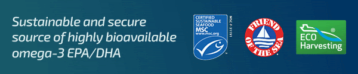
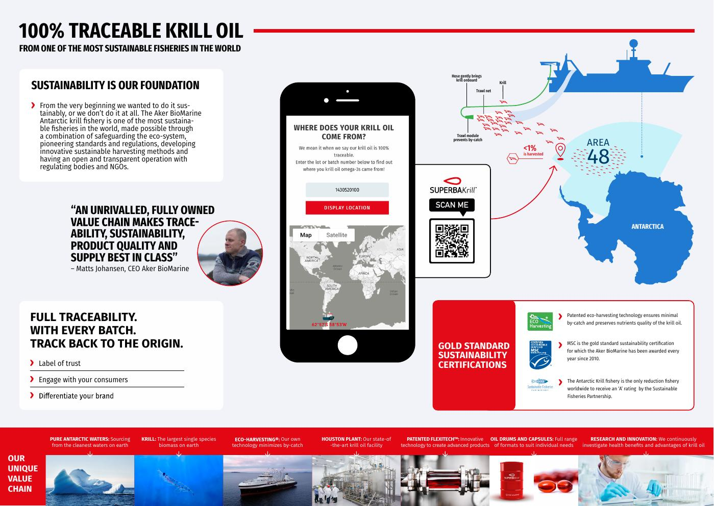
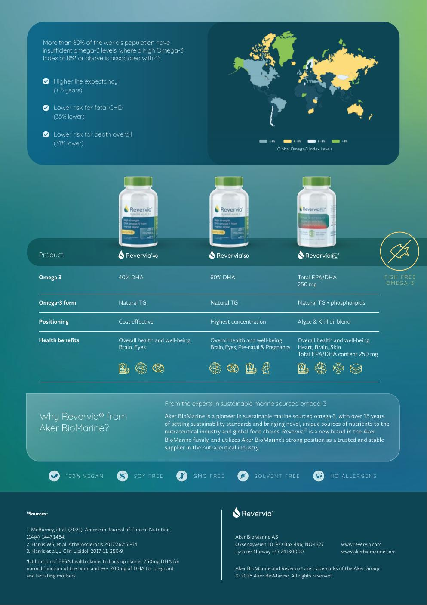

EPA i DHA
Najważniejsze kwasy omega-3 stosowane w suplementach wspierających codzienną dietę.
Language / Sprache / Język
Select the language version of the website.
Omega-3 z kryla antarktycznego
Nowoczesny kompleks morski omega-3 dla osób, które szukają wysokiej jakości suplementacji opartej na czystym źródle, pełnej identyfikowalności i składnikach naturalnie obecnych w oleju z kryla.
Dlaczego olej z kryla
Olej z kryla wyróżnia się tym, że kwasy omega-3 EPA i DHA występują w nim w dużej części w formie fosfolipidowej. Fosfolipidy są naturalnym elementem błon komórkowych, dlatego ten rodzaj omega-3 dobrze pasuje do komunikacji o odżywianiu komórkowym i codziennym wsparciu organizmu.
Formuła łączy kilka składników naturalnie obecnych w krylu: EPA, DHA, fosfolipidy, cholinę oraz astaksantynę. Dzięki temu olej z kryla nie jest tylko klasycznym źródłem omega-3, ale pełniejszym kompleksem lipidowym.
To produkt dla osób, które zwracają uwagę nie tylko na dawkę EPA i DHA, ale również na pochodzenie surowca, świeżość oleju, czystość, transparentny łańcuch dostaw i wygodę stosowania.
Najważniejsze kwasy omega-3 stosowane w suplementach wspierających codzienną dietę.
Forma lipidowa charakterystyczna dla oleju z kryla, związana ze strukturą błon komórkowych.
Składnik ważny dla prawidłowego metabolizmu lipidów, metabolizmu homocysteiny i funkcji wątroby.
Naturalny antyoksydant odpowiedzialny za intensywnie czerwony kolor oleju z kryla.
Codzienne wsparcie diety
Treści na stronie są napisane rzeczowo i bez obietnic leczenia. Skupiają się na składzie, jakości, pochodzeniu oraz autoryzowanych kierunkach komunikacji dla EPA, DHA i choliny.
EPA i DHA przyczyniają się do prawidłowego funkcjonowania serca. Korzystne działanie występuje przy odpowiednim dziennym spożyciu tych kwasów tłuszczowych.
DHA przyczynia się do utrzymania prawidłowego funkcjonowania mózgu oraz prawidłowego widzenia przy spełnieniu wymaganych warunków stosowania.
Cholina wspiera prawidłowy metabolizm lipidów, prawidłowy metabolizm homocysteiny oraz prawidłowe funkcjonowanie wątroby.
Olej z kryla można włączyć do codziennej suplementacji osób aktywnych, które chcą uzupełniać dietę w omega-3 i składniki lipidowe.
Skład produktu
Poniższa tabela pokazuje przykładowy profil składników dla dwóch wariantów oleju z kryla. Zamiast powtarzać te same informacje na grafice, dane zostały przedstawione w czytelnej tabeli, która lepiej działa na urządzeniach mobilnych i jest korzystniejsza dla SEO.
| Składnik | Superba 2 500 mg |
Superba Boost 590 mg |
|---|---|---|
| Omega-3 | 220 mg | 318 mg |
| EPA | 120 mg | 178 mg |
| DHA | 56 mg | 82 mg |
| Fosfolipidy | 400 mg | 660 mg |
| Cholina | 50 mg | 82,6 mg |
| Astaksantyna | 100 mcg | 100 mcg |
Dane mają charakter informacyjny i pokazują przykładowy profil produktu. Finalna etykieta, dawkowanie i oświadczenia zdrowotne powinny zostać dopasowane do konkretnego rynku sprzedaży.
Jakość i pochodzenie
W kategorii omega-3 jakość surowca ma kluczowe znaczenie. Olej z kryla premium powinien być oceniany nie tylko przez pryzmat ilości EPA i DHA, ale również przez pochodzenie, świeżość, sposób pozyskania, dokumentację jakościową i możliwość śledzenia partii.


Materiały producenta podkreślają szerokie zaplecze badań nad olejem z kryla i jego składnikami.
Technologia i know-how są ważnym elementem pozycjonowania produktu premium.
Globalna obecność wzmacnia wiarygodność dostawcy i stabilność łańcucha dostaw.
Możliwość śledzenia partii od źródła do produktu końcowego jest jednym z głównych argumentów jakościowych.
DHA z alg
Olej z mikroalg to nowoczesna alternatywa dla osób, które szukają DHA bez ryb i bez składników pochodzących ze skorupiaków. Mikroalgi są pierwotnym źródłem DHA w morskim łańcuchu pokarmowym, dlatego stanowią logiczny kierunek rozwoju suplementów omega-3.
Linia Revervia obejmuje oleje z alg w naturalnej formie triglicerydowej, z wysoką zawartością DHA. To rozwiązanie pasuje do produktów pozycjonowanych jako fish-free, vegan, soy free, GMO free i solvent free.

Dwie ścieżki suplementacji
Olej z kryla jest dobrym kierunkiem dla osób szukających kompleksu EPA/DHA z fosfolipidami, choliną i astaksantyną. Olej z alg lepiej pasuje do klientów, którzy chcą roślinnego DHA bez ryb i bez skorupiaków.
EPA, DHA, fosfolipidy, cholina i astaksantyna w jednej formule pochodzącej z kryla.
Fish-free alternatywa dla osób szukających wysokiej zawartości DHA z mikroalg.
FAQ
Olej z kryla zawiera kwasy omega-3 EPA i DHA, fosfolipidy, cholinę oraz naturalnie obecną astaksantynę. To połączenie odróżnia go od wielu klasycznych olejów rybich.
Najważniejszą różnicą jest forma lipidowa. W oleju z kryla duża część omega-3 występuje w formie fosfolipidów, które są naturalnym elementem błon komórkowych.
DHA z alg to roślinne źródło kwasu dokozaheksaenowego. Jest odpowiednie dla produktów kierowanych do osób, które nie chcą stosować oleju rybiego lub składników ze skorupiaków.
Olej z kryla pochodzi ze skorupiaków. Osoby z alergią na skorupiaki, kobiety w ciąży, osoby karmiące piersią oraz osoby przyjmujące leki powinny skonsultować stosowanie suplementu z lekarzem.
Kontakt
Skontaktuj się, jeżeli chcesz uzyskać więcej informacji o produkcie, wariantach, dokumentacji jakościowej lub możliwościach współpracy.